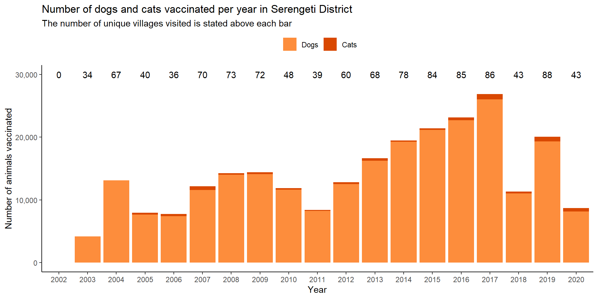
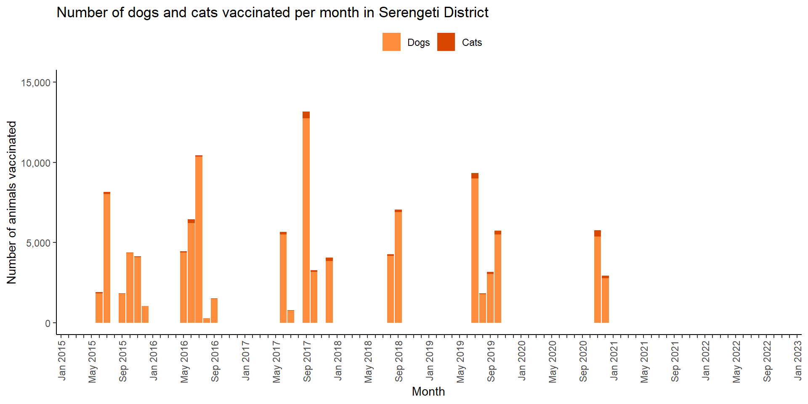

The map details villages that were vaccinated (1 or more times) in Serengeti District from 2014-2018; where villages were visited multiple times in the same year, the date and Kitongoji (sub-village) are given. Select from the dropdown menu to view a specific year: